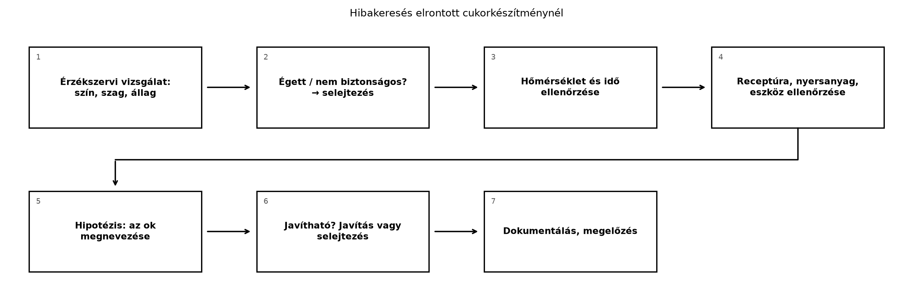

A cukrászüzemben a cukorfőzés a legnagyobb baleseti kockázatú műveletek közé tartozik: a forró cukoroldat, a karamell és az olvasztott cukor hőmérséklete jellemzően 150–180 °C, de elérheti a 190 °C-ot is (tanulási példa, ellenőrizendő: a tényleges főzési hőmérséklet a cukorfőzési foktól függ). Egyetlen félreértett lépés – például víz kerül a forró karamellbe – súlyos égési sérülést okozhat. Ugyanakkor a cukorkészítmények elkészítése nemcsak balesetvédelmi, hanem higiéniai és technológiai szempontból is szigorú fegyelmet kíván: a kristályosodás, a túlfőzés, a keserű karamell vagy a ragadós grillázs mind olyan hiba, amely a vendég elé kerülő termék minőségét rontja. Ha ezeket az okokat és a megelőzésüket nem ismered, a hibák újra és újra megismétlődnek, és a selejt mellett a balesetveszély is nő. Ebben az alfejezetben a cukorfőzés biztonságos munkafolyamatát, higiéniai rendjét és a tipikus hibák felismerését, javítását, illetve megelőzését tanulod meg.
Képzeld el a következő műhelyhelyzetet. Reggel hat óra van, a cukrász éppen karamellt készít egy Dobos torta tetejére. A cukrot lassan olvasztja, közben a hőmérőt figyeli. A telefon megcsörren, a cukrász egy pillanatra hátrafordul, és a forró karamell hirtelen sötétedni kezd, majd keserű füstöt ereget. A fazékban lévő massza már nem aranybarna, hanem csaknem fekete. A cukrász megégette magát, mert a keverőkanalat a forró masszába ejtette, és a karamell kifröccsent. A tűzhely mellett nincs hidegvizes edény, a védőkesztyűt pedig nem vette fel. Ez a helyzet jól mutatja, miért kell a cukorfőzést soha nem félvállról venni: a baleset és a technológiai hiba gyakran ugyanabból a figyelmetlenségből fakad.
Definíció. A cukorfőzés balesetvédelme mindazon megelőző intézkedések és egyéni védőfelszerelések összessége, amelyek a forró cukoroldat, karamell, olvasztott cukor és az ezeket melegítő berendezések által okozott égési, forrázási és vágási sérülések kockázatát csökkentik.
Szabály. A cukorfőzés során a munkaterületet úgy kell kialakítani, hogy a forró edény körül legalább egy lépésnyi szabad mozgástér legyen, a közelben hidegvizes edény vagy lefolyó legyen elérhető, és a munkafelület száraz, csúszásmentes legyen.
Jogszabály. A munkavédelmi törvény (1993. évi XCIII. törvény) általános követelménye, hogy a munkáltató köteles a munkavállalókat a veszélyes munkafolyamatokra oktatni, és a szükséges egyéni védőeszközöket biztosítani. A cukorfőzés égési kockázatai miatt a védőkesztyű, védőkötény és hosszú ujjú munkaruha viselése indokolt (ellenőrizendő: a konkrét kockázatértékelés és a munkáltatói utasítás szerint). A tűzvédelemre az Országos Tűzvédelmi Szabályzat vonatkozik (ellenőrizendő: a hatályos előírás).
Definíció. A cukorkészítés higiéniája magában foglalja az eszközök, edények és a munkakörnyezet tisztaságát, a cukoroldat és a késztermékek mikrobiológiai és fizikai szennyeződéstől való védelmét, valamint a megfelelő tárolási feltételek (páratartalom, hőmérséklet) biztosítását.
Szabály. A cukorkészítmények – különösen a fondán, a karamell és a grillázs – érzékenyek a nedvességre és a levegő páratartalmára. A felületükön lecsapódó víz vagy a magas relatív páratartalom ragadóssá, fénytelenné teszi őket, és elősegítheti a kristályosodást. Ezért a késztermékeket jól záródó, száraz, hűvös helyen kell tárolni (ellenőrizendő: a termékreceptúra és a gyártói ajánlás szerinti tárolási hőmérséklet és páratartalom).
Az alábbi ellenőrzőlista a cukorfőzés balesetvédelmi és higiéniai alapjait foglalja össze.
Technológiai lap – Biztonságos cukorfőzési ellenőrzőlista
Az ellenőrzőlista legfontosabb pontjait egy pillantással az ábra mutatja: helyesen hosszú ujjú köntös, hajháló, zárt cipő, ékszer nélkül; az edény nyele befelé fordul, hideg vizes edény van karnyújtásnyira, és a kiöntő felület elő van készítve. A hibás képen öt hiba van – a HTML-változatban rájuk kattintva keresheted meg őket.
Figyelem. A forró cukor és karamell hőmérséklete jóval meghaladja a 100 °C-ot. Bőrre kerülve azonnali, mély égési sérülést okoz, mert a cukor rátapad a bőrre és tovább éget. Soha ne kóstold meg közvetlenül a forró masszát, és ne nyúlj a fazékba.
Biztonsági korlát. A cukorfőzést tanműhelyi vagy üzemi környezetben csak oktatás után, felügyelet mellett végezheted. Otthon háztartási tűzhelyen, kis adagban gyakorolj, de mindig tarts be ugyanezeket a szabályokat. Gyermekek és háziállatok ne tartózkodjanak a főzőhely közelében.
Higiénia. A cukorkészítés – bár a magas hőmérséklet sok mikroorganizmust elpusztít – mégsem kockázatmentes higiéniai szempontból. A főzés előtti és utáni szennyeződések (haj, por, nyersanyagmaradvány, csomagolóanyag-darab, kézen lévő sérülésből származó baktérium) bekerülhetnek a késztermékbe, és ott – különösen a nedvesebb, krémesebb készítményekben – elszaporodhatnak.
Szabály. A cukorkészítés megkezdése előtt végezd el a higiéniai munkakezdést: munkaruha felvétel, hajháló, ékszer eltávolítása, alapos kézmosás, az eszközök és a munkafelület fertőtlenítése. A cukorkészítményekhez csak tiszta, száraz, zsír- és vízmentes edényeket, spatulákat, formákat használj.
Higiénia. A kész cukorkészítményeket (fondán, karamell, grillázs, olvasztott cukor) hűtés után azonnal csomagold be, vagy tárold jól záródó, száraz, hűvös, fénytől védett helyen. A nedvesség nemcsak a minőséget rontja, hanem mikrobiális növekedéshez is vezethet a felületen, ha a termék nem kellően alacsony vízaktivitású (ellenőrizendő: a termékre jellemző vízaktivitás és a tárolási idő).
Kritikus pont. A cukorkészítés során a legfontosabb higiéniai szempont a keresztszennyeződés elkerülése. A nyers tojás, tejszín, vaj vagy gyümölcs mellett használt eszközöket ne használd a kész cukorkészítményhez anélkül, hogy alaposan elmosnád és fertőtlenítenéd. A cukorkészítmények sokszor a késztermék utolsó rétegét képezik, ezért a szennyeződés közvetlenül a fogyasztóhoz juthat.
A cukorkészítmények hibái általában a nyersanyag, a hőmérséklet, az idő vagy a műveleti sorrend hibájára vezethetők vissza. A következő táblázat a leggyakoribb hibákat foglalja össze.
| Hiba (tünet) | Lehetséges ok | Megelőzés | Javítás |
|---|---|---|---|
| Kristályosodás (a cukoroldat zavarossá válik, szemcsés lesz) | A főzés közbeni keverés, szennyeződés (pl. cukorkristály az edény falán), nem megfelelő hőfok | Forrás után ne keverd; az edény faláról a cukorkristályt nedves ecsettel mosd le; kevés glükózszirup vagy invertcukor hozzáadása gátolja a kristályosodást (ellenőrizendő: a receptúra) | Ha a kristályosodás már megtörtént, a masszát fel kell oldani vízzel, és újra főzni; készterméknél a hibás részt le kell választani, ha lehetséges |
| Túlfőzés (a karamell sötétbarna, keserű, égett szagú) | A hőmérséklet túl magas, a főzési idő túl hosszú, a figyelés hiánya | Használj hőmérőt, és tartsd a receptúra szerinti hőfokot; a karamellt aranybarnánál le kell venni a tűzről | A keserű, égett szagú karamell selejt: nem szabad felhasználni, és tejszínnel sem menthető meg; a világos-közepes, nem keserű karamell karamellszószhoz felhasználható |
| Ragadós grillázs (a massza nem keményedik meg, ragad) | Túl alacsony hőfok, túl rövid főzési idő, magas páratartalom, a cukor nem karamellizálódott eléggé | Ellenőrizd a hőmérsékletet (kb. 160–170 °C, tanulási példa, ellenőrizendő), és a páratartalmat; a grillázst száraz, hűvös helyen készítsd | Ha a massza még forró, folytathatod a főzést a megfelelő hőfokig; ha már kihűlt, újra melegíthető, de figyelni kell a kristályosodásra; ha szerkezetileg rossz, csak új adag készítése segít |
| A fondán túl kemény vagy túl lágy | Túl kevés vagy túl sok víz, nem megfelelő főzési fok, helytelen hűtés | A receptúra szerinti víz-cukor arányt használd, a főzési hőmérsékletet ellenőrizd | A túl kemény fondánt kevés meleg vízzel vagy sziruppal lehet lazítani; a túl lágy fondánhoz porcukrot vagy újra főzött, magasabb hőfokú cukrot adhatsz |
A hibakereséshez mindig az érzékszervi vizsgálattal kezdd: nézd meg a színt, az állagot, szagold meg, és ha biztonságos, kóstold meg. Ezután nézd meg a hőmérséklet-naplót vagy a főzés körülményeit, és keresd az eltérést a receptúrától.
A hibakereséshez az alábbi gondolati láncot kövesd, amikor egy cukorkészítmény nem sikerült.

A folyamatábra azt mutatja, hogy a hibakeresés mindig a tények megfigyelésével kezdődik, majd a lehetséges okok szisztematikus ellenőrzésével folytatódik. A javítás csak akkor jöhet szóba, ha a termék élelmiszerbiztonsági szempontból kifogástalan, és a hiba technológiai jellegű.
Hibás tétel: Egy cukrászüzemben a karamell elkészítésekor a massza váratlanul kristályosodni kezdett, és a kész karamell zavaros, szemcsés lett. A cukrász szerint pontosan követte a receptet: 500 g cukrot 150 ml vízzel feltett főni, és amikor felforrt, néhányszor megkeverte, hogy ne égjen le.
Tünet: A karamell nem átlátszó, aranybarna, hanem zavaros, fehér foltokkal, és a felületén apró kristályok láthatók. Íze édes, de nem karamellás.
Hipotézis: A kristályosodást a forrás utáni keverés okozta, mert a keverőeszközön vagy az edény falán lévő apró cukorkristályok bekerültek a túltelített oldatba, és kristályosodási gócokat képeztek. Emellett a hirtelen hőmérséklet-változás (ha a keverés hideg eszközzel történt) is elősegíthette a kristálykiválást.
Ellenőrzés: Meg kell vizsgálni, hogy a keverőeszköz tiszta és száraz volt-e, volt-e rajta cukormaradvány. Az edény falán is lehetett-e odakristályosodott cukor. A hőmérsékletet a főzés közben nem mérték, de a recept szerint a karamellhez 160–170 °C-ot kellett volna elérni (tanulási példa, ellenőrizendő). Ha a keverés miatt a hőmérséklet visszaesett, az is okozhatta a kristályosodást.
Ok: A karamellkészítésnél a cukor feloldódása után nem szabad keverni, mert a mechanikai behatás és a gócok bekerülése kristályosodást indít el. A keverés ráadásul a hőmérsékletet is csökkenti.
Javítás: A tétel visszaoldható, mert a karamellíz még nem alakult ki: kb. 100 ml vizet adunk hozzá, keverés közben teljesen feloldjuk, majd keverés nélkül újra főzzük. Ha a kristályosodás után már megégett vagy megbarnult a massza, a tételt selejtezni kell. A selejtezés oka ilyenkor a technológiai hiba, nem élelmiszerbiztonsági kockázat, de a készterméket nem szabad felhasználni.
Megelőzés: A jövőben forrás után ne keverjük a cukrot. Az edény faláról a kristályokat nedves ecsettel mossuk le. Használjunk hőmérőt, és ne hagyjuk el a folyamatot. A keveréshez csak tiszta, száraz, rozsdamentes eszközt használjunk.
Bár a legtöbb cukorkészítési hiba nem mennyiségi, a túlsűrűsödött szirup vagy a túl kemény fondán hígításához hasznos tudni a tömegszázalékos számítást.
Számítás. Tegyük fel, hogy készítettél 1200 g 80%-os cukoroldatot, de a recept 65%-os oldatot ír elő (a többi víz). Mennyi vizet kell hozzáadni?
Legyen a hozzáadandó víz tömege gramm. A cukor tömege a kiindulási oldatban:
A hozzáadott víz után az oldat össztömege , és a cukortartalomnak ennek 65%-ának kell lennie:
Megoldjuk -re:
Tehát körülbelül 277 g vizet kell hozzáadni, és alaposan elkeverni. Ellenőrzés: A hozzáadás után az össztömeg kb. 1477 g, amiben 960 g cukor van. , azaz 65%.
Ez a számítás akkor használható, ha a hiba csak a sűrűségben van, és a termék még nem kristályosodott vagy égett meg.
Cél: A cukorfőzés biztonságos és higiénikus kivitelezése, valamint egy hibás készítmény felismerése és javítása vagy selejtezése.
Eszközök és anyagok: vastag aljú edény, hőmérő, fakanál vagy hőálló spatula, hidegvizes edény, védőkesztyű, hosszú ujjú munkaruha, cukor, víz, esetleg glükózszirup.
Higiéniai munkakezdés: munkaruha felvétel, hajháló, ékszer levétele, kézmosás, a munkafelület és az eszközök fertőtlenítése.
Biztonsági korlát. Ezt a gyakorlatot tanműhelyben vagy üzemben oktatói felügyelet mellett végezd. Otthon kis adaggal, háztartási tűzhelyen gyakorolhatsz, de a forró cukor közelébe gyermek ne kerüljön.
A gyakorlat lépései:
Ellenőrzési pontok: A főzés alatt a massza átlátszó-e? A hőmérő stabilan mutatja-e a hőfokot? A kihűlt massza képlékeny, átlátszó és kristálymentes-e, vagy szemcsés?
Takarítás: Az edényt hagyd lehűlni, majd forró vízzel tisztítsd. A munkafelületet töröld le. A cukormaradványt ne kapard késsel, hanem forró vízben oldd fel.
A cukorkészítmények minőségét elsősorban érzékszervileg ellenőrizzük:
A tömegellenőrzésnél a késztermék darabtömegét a receptúra szerint kell mérni, és a csomagolás előtt szúrópróbaszerűen ellenőrizni.
A fenti táblázatban felsorolt hibákon túl a következőkre figyelj:
Égési sérülés forró cukortól. Tünet: a dolgozó bőrén vörös vagy hólyagos égési sérülés. Ok: nem viselt védőfelszerelést, a forró massza kifröccsent, vagy a dolgozó belenyúlt. Megelőzés: védőkesztyű, hosszú ujjú ruha, óvatos anyagbeadás, hidegvizes edény a közelben. Javítás: azonnali elsősegély: hűvös (nem jeges) folyóvízzel hűtsd legalább 10–20 percig (ellenőrizendő: hatályos elsősegély-ajánlás); a bőrre tapadt cukrot ne tépd le, a víz feloldja; a gyűrűt, órát vedd le, mielőtt a terület duzzad; a hólyagot ne szúrd fel, ne kenj rá semmit; steril kötést tegyél rá; nagy, arcot, kezet vagy ízületet érintő égésnél hívd a 112-t. Lásd a Tűzvédelem és elsősegély a cukrászműhelyben alfejezetet.
A karamell keserű. Tünet: a karamell sötétbarna, égett szagú, íze keserű. Ok: túl magas hőmérséklet vagy túl hosszú főzés. Megelőzés: hőmérő használata, a folyamat folyamatos figyelése, a karamellt az aranybarna szín elérésekor le kell venni. Javítás: a keserű karamell nem használható fel, selejtezni kell.
A grillázs ragadós. Tünet: a kihűlt grillázs a foghoz ragad, nem ropogós. Ok: alacsony főzési hőmérséklet, magas páratartalom, túl kevés cukor karamellizálódott. Megelőzés: a hőmérséklet ellenőrzése, száraz környezet, a massza gyors hűtése. Javítás: ha még forró, tovább főzhető; ha már kihűlt, csak új adag készítése segít.
Egy esküvői torta készítésekor a cukrásznak karamelldíszt kellett készítenie. A karamell főzése közben a telefon többször is csörgött, és a cukrász elhagyta a tűzhelyet. Mire visszatért, a karamell már csaknem fekete volt, és keserű szag terjengett. A karamell tönkrement, de a cukrász úgy döntött, hogy megpróbálja tejszínnel felhígítani és karamellmártásként felhasználni. A vendégek azonban panaszkodtak a keserű ízre; az égett íz ugyanis a hígítástól nem tűnik el. A hiba oka a figyelmetlenség és a folyamat magára hagyása volt. A tanulság: a cukorfőzést soha nem szabad felügyelet nélkül hagyni, és a keserű karamellt nem szabad „megmenteni”: egészségügyi veszélyt nem jelent, de a minőségromlás elfogadhatatlan. A helyes döntés az lett volna, ha a hibás tételt selejtezik, és új adagot készítenek időben.
1. feladat (A). Sorold fel a cukorfőzés három legfontosabb egyéni védőfelszerelését, és indokold, miért van rájuk szükség.
2. feladat (A). Mit jelent a „higiéniai munkakezdés” a cukorkészítés előtt? Írj le legalább öt lépést.
3. feladat (B). Egy cukrász 800 g cukorból és 200 ml vízből készített szirupot. A főzés végén a szirup tömege 850 g lett (a víz egy része elpárolgott). Számítsd ki a szirup cukortartalmát tömegszázalékban.
4. feladat (B). Van 900 g 75%-os cukoroldatod, és 60%-osra szeretnéd hígítani. Mennyi vizet kell adnod? (Oldd meg lépésenként, és ellenőrizd.)
5. feladat (C). Egy tanuló a karamellkészítés során a hőmérőt nem használta, és a massza sötétbarna lett, keserű szaggal. A tanuló úgy gondolja, hogy evőkanálnyi vajat ad hozzá, hogy az ízét javítsa. Elemezd a hibát: mi a fő hiba, milyen következményekkel járhat, és mi a helyes eljárás?
6. feladat (D). Végezd el a gyakorlati útmutatóban leírt cukorfőzési gyakorlatot. Tölts ki egy rövid technológiai lapot a megfigyeléseiddel: hőmérséklet, idő, a massza állaga, színe, és a késztermék minőségi jellemzői. Értékeld a saját munkádat a megadott szempontok szerint.
1. feladat. A három legfontosabb védőfelszerelés: hosszú ujjú munkaruha (védi a karokat a fröccsenéstől), hőálló védőkesztyű (a forró edény és a massza megfogásakor véd), és csúszásmentes, zárt orrú lábbeli (a kiömlött forró anyagtól véd, és megelőzi a csúszásos baleseteket). Emellett indokolt lehet a védőkötény és arcvédő is, ha nagyobb mennyiséggel dolgozunk.
2. feladat. A higiéniai munkakezdés lépései: (1) tiszta, vasalt munkaruha felvétele, (2) hajháló vagy sapka felvétele, (3) az ékszerek, óra, gyűrű levétele, (4) alapos kézmosás szappannal, szükség esetén fertőtlenítő kézmosóval, (5) a munkafelület és az eszközök tisztítása, fertőtlenítése, (6) a nyersanyagok és az eszközök ellenőrzése (tisztaság, sértetlenség, lejárat). A cukorkészítéshez emellett fontos, hogy az edények zsír- és vízmentesek legyenek.
3. feladat. A cukor tömege 800 g, a szirup tömege a főzés után 850 g. A cukortartalom tömegszázaléka:
Ellenőrzés: A víz a főzés során elpárolgott, ezért a szirup sűrűbb lett, mint a kiindulási 80% (800 g cukor / 1000 g oldat). A 94,1% reális.
4. feladat. A kiindulási oldatban a cukor tömege:
Legyen a hozzáadandó víz g. Az új oldat össztömege , és a cukortartalom 60%:
Megoldás:
Ellenőrzés: Az új össztömeg 1125 g, a cukor 675 g. , tehát 60%.
5. feladat. A fő hiba a hőmérő mellőzése és a folyamat nem megfelelő figyelése, ami túlfőzéshez vezetett. A keserű karamell égett cukrot tartalmaz, ami kellemetlen ízű, és nagyobb mennyiségben fogyasztva akár egészségügyi panaszokat is okozhat (például gyomorégést, rosszullétet), bár közvetlen mérgezést nem okoz. A vaj hozzáadása nem javítja az égett ízt, legfeljebb hígítja, de a keserűség megmarad, és a termék minősége továbbra is elfogadhatatlan. A helyes eljárás a hibás tétel selejtezése, a hiba dokumentálása, és új adag készítése hőmérővel, folyamatos felügyelet mellett.
6. feladat. A gyakorlati feladat értékelése: a tanulónak rögzítenie kell a főzés hőmérsékletét és idejét, a massza állagát (átlátszó, szemcsés, stb.), a kihűlt termék színét és törési tulajdonságait. Az értékelési szempontok: (1) a munkafolyamat biztonságos és higiénikus volt-e, (2) a hőmérsékletet megfelelően mérte-e, (3) a késztermék minősége megfelel-e a leírásnak, (4) a technológiai lapot hiánytalanul kitöltötte-e, (5) a takarítást elvégezte-e. Várt eredmény: a cukoroldat átlátszó, a kihűlt massza (a 118–120 °C-os főzet lágy–kemény golyó fokú, tehát képlékeny, nem üvegszerű) kristálymentes, nem szemcsés.
A cukorkészítés balesetvédelme a forró cukoroldat, karamell és olvasztott cukor magas hőmérséklete miatt elsődleges. Mindig viselj hosszú ujjú munkaruhát, hőálló védőkesztyűt és csúszásmentes lábbelit; a munkaterület legyen száraz, a közelben legyen hidegvizes edény. A főzés közben soha ne hagyd magára a folyamatot, és forrás után ne keverd a cukrot, mert az kristályosodást okoz. A higiénia a cukorkészítésnél is alapkövetelmény: tiszta eszközök, száraz edények, a késztermékek védelme a nedvességtől és a keresztszennyeződéstől. A tipikus hibák – kristályosodás, túlfőzés, keserű karamell, ragadós grillázs – mind a hőfok, az idő, a keverés vagy a páratartalom hibájára vezethetők vissza. A hibakeresés során először az érzékszervi tulajdonságokat vizsgáld, majd a hőmérsékletet, az időt és a receptúrát ellenőrizd; a javítás csak akkor jöhet szóba, ha a termék élelmiszerbiztonsági szempontból megfelel. Ezt a hibakeresési módszert fogod használni a Bonbonok jellemzői, alapanyagai és gyártási módszerei és az Egyszerű díszítés: bevonás, burkolás, beszórás, felrakás, fecskendezés, formázás alfejezetben is, ahol a cukorkészítmények hasonló módon viselkednek.
Az alfejezetben hivatkozott jogszabályok és szabványok a munkavédelmi törvény (1993. évi XCIII. törvény), az Országos Tűzvédelmi Szabályzat, valamint a 852/2004/EK rendelet élelmiszer-higiéniai alapelvei. A konkrét paragrafusokat, a kockázatértékelés részleteit és a pontos védőfelszerelés-követelményeket az üzemi kockázatértékelés és a hatályos jogszabályok szerint ellenőrizni kell. A hőmérséklet- és időértékek (pl. a karamell 160–170 °C, a cukoroldat 118–120 °C) tanulási példák, amelyek a cukorfőzési foktól és a receptúrától függően változnak; pontos értéküket a szakmai útmutatók és a gyártói adatlapok alapján kell meghatározni. A tárolási páratartalomra és a vízaktivitásra vonatkozó adatok szintén ellenőrzést igényelnek. A hibakeresési folyamat és a javítási eljárások a szakmai gyakorlat szerintiek, nem jogszabályi előírások.